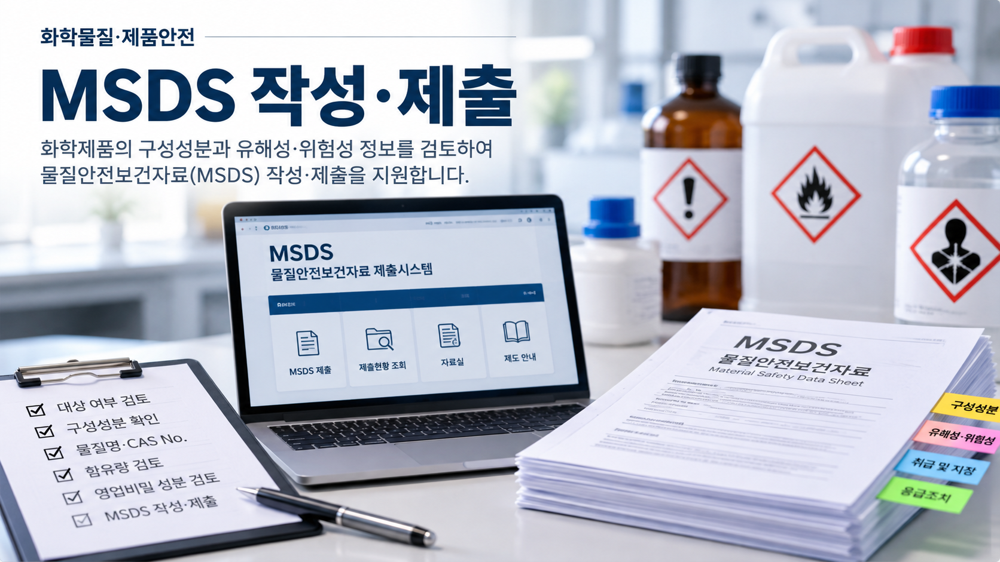
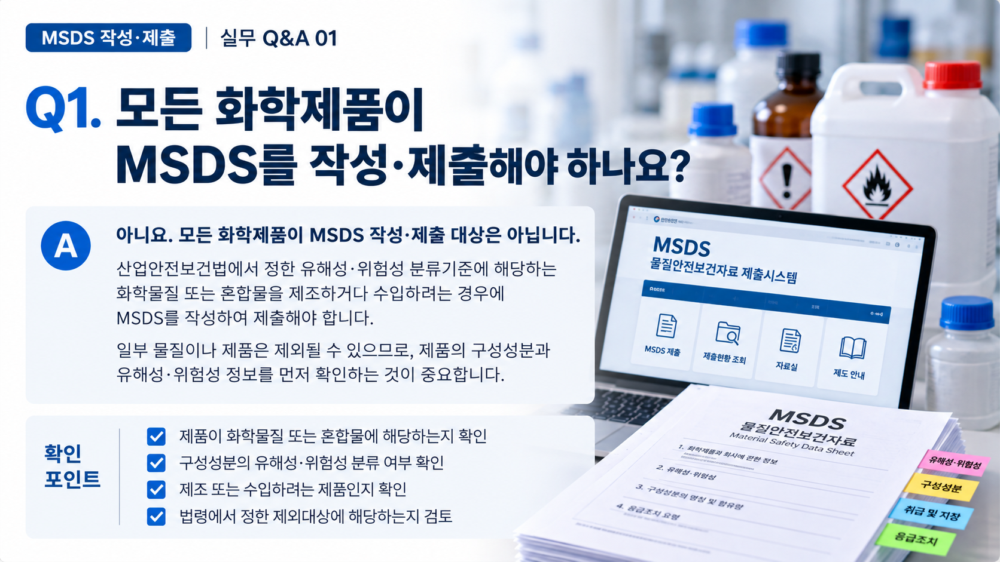
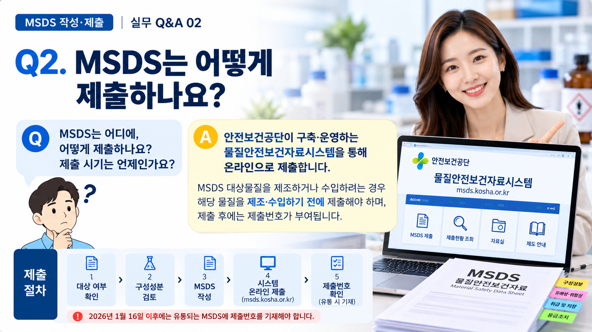

01. MSDS란 무엇인가요?
MSDS는 물질안전보건자료(Material Safety Data Sheet)로, 화학물질 또는 혼합물의 유해성·위험성과 안전한 취급에 필요한 정보를 담은 자료입니다.
제품명, 구성성분, 유해성·위험성, 취급 시 주의사항, 물리·화학적 특성 등 법령에서 정한 사항을 기재합니다.
02. 모든 화학제품이 MSDS 작성·제출 대상인가요?
아닙니다. 화학물질 또는 이를 포함한 혼합물 중 산업안전보건법상 유해성·위험성 분류기준에 해당하는 물질이 MSDS 작성·제출 대상이 되며, 법령에서 정한 제외대상도 있습니다.
따라서 제품의 명칭만으로 판단하기보다는 구성성분과 유해성·위험성 관련 자료를 확인하여 대상 여부를 검토하는 것이 중요합니다.
먼저 확인하세요.
MSDS를 작성하기 전에 해당 제품이 물질안전보건자료대상물질에 해당하는지부터 확인해야 합니다. 대상 여부에 따라 이후 준비절차가 달라질 수 있습니다.

03. 누가 MSDS를 작성·제출하나요?
물질안전보건자료대상물질을 국내에서 제조하거나 해외에서 수입하려는 자가 MSDS를 작성하여 제출합니다.
따라서 해외에서 완제품을 수입하여 국내에서 판매하는 경우에도 해당 제품이 MSDS 작성·제출 대상물질에 해당한다면 수입자가 관련 의무를 확인해야 합니다.
| 구분 | 주요 확인사항 |
|---|---|
| 국내 제조 | 제조하려는 제품의 MSDS 대상 여부와 구성성분 확인 |
| 해외 수입 | 수입제품의 구성성분 및 국외 제조자가 제공한 자료 확인 |
04. 어떤 자료를 확인해야 하나요?
MSDS 작성·제출을 준비할 때에는 제품의 구성성분과 유해성·위험성을 확인할 수 있는 기초자료가 중요합니다.
- 제품명과 제품의 용도
- 단일물질 또는 혼합물 여부
- 제품을 구성하는 화학물질의 명칭
- CAS No. 등 화학물질 식별정보
- 구성성분별 함유량 또는 함유량 범위
- 유해성·위험성 관련 자료
- 국외 제조자 또는 공급자가 제공한 성분자료
※ 실제 필요한 자료는 제품의 구성과 제조·수입 형태에 따라 달라질 수 있습니다.

05. MSDS는 언제, 어떻게 제출하나요?
MSDS 작성·제출 대상물질을 제조하거나 수입하려는 경우에는 원칙적으로 해당 물질을 제조하거나 수입하기 전에 MSDS와 관련 자료를 제출해야 합니다.
전자적 제출은 안전보건공단이 구축·운영하는 물질안전보건자료시스템을 이용합니다.
※ 2026.01.16. 이후 유통되는 MSDS에는 제출 시 부여받은 제출번호가 기재되어야 합니다.
06. MSDS에 없는 구성성분 정보도 확인해야 하나요?
MSDS 대상물질을 구성하는 화학물질 가운데 유해성·위험성 분류기준에 해당하지 않는 화학물질의 명칭과 함유량도 별도로 제출해야 하는 경우가 있습니다.
다만 해당 정보가 MSDS에 모두 포함되어 있거나, 수입의 경우 법령에서 정한 국외 제조자의 확인서류를 제출하는 등 일정한 경우에는 별도 제출 방식이 달라질 수 있습니다.
따라서 수입제품은 해외에서 제공받은 MSDS만 확인하기보다 구성성분 관련 자료가 국내 제출요건을 충족하는지도 함께 살펴보는 것이 중요합니다.
07. 영업비밀 성분은 공개하지 않아도 되나요?
구성성분의 화학물질 명칭과 함유량이 영업비밀에 해당한다고 하여 임의로 MSDS에서 제외할 수 있는 것은 아닙니다.
법령에서 정한 요건에 해당하는 경우에는 사전에 비공개 승인을 신청하여 승인을 받은 뒤 실제 명칭과 함유량 대신 승인된 대체자료를 기재할 수 있습니다.
비공개 승인은 별도 절차입니다.
비공개 승인이 필요한 경우에는 원칙적으로 해당 물질을 제조하거나 수입하기 전에 신청해야 하므로, MSDS 제출 준비 단계에서 함께 검토하는 것이 중요합니다.
08. MSDS 작성·제출 전에 특히 주의할 점
- 제품명만으로 MSDS 작성·제출 대상 여부를 판단하지 않는 것이 좋습니다.
- 수입제품은 국외 제조자가 제공한 MSDS와 구성성분 관련 자료를 함께 확인해야 합니다.
- 구성성분의 물질명, CAS No. 및 함유량 등의 정보가 서로 일치하는지 확인하는 것이 중요합니다.
- MSDS에 기재되지 않은 구성성분과 관련하여 별도 제출자료가 필요한지도 확인해야 합니다.
- 영업비밀 성분이 있다면 비공개 승인 필요 여부를 사전에 검토해야 합니다.
- 제출 이후 제품의 구성성분 등 법령에서 정한 사항이 변경된 경우에는 변경사항을 반영한 MSDS 제출이 필요한지 확인해야 합니다.
MSDS 작성·제출을 준비하고 계신가요?
제조·수입하려는 제품과 현재 보유하고 있는 자료를 기준으로 MSDS 대상 여부와 추가로 확인해야 할 사항을 점검해 보세요.